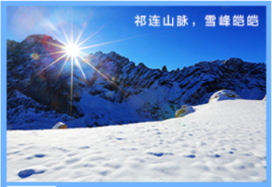
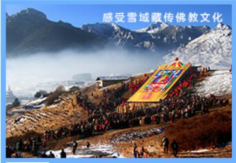
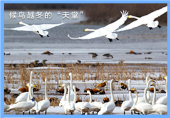

春冬游摘要

冰雪奇观

绚丽陇原

诗意栖息

景动我心
甘肃冰雪旅游资源丰富，“青山不老、为雪白头”，被誉为河西走廊母亲山的祁连山脉，雪峰皑皑，尽显“北国”壮美。进入冬季以后，甘肃的部分景区还增添了雪景、冰瀑等夏日难得一见的景观，呈现出“千里冰封、万里雪飘”的壮美风光，宛如童话般的银色世界。目前，全省各地共建有近20处配套设施齐全的现代化滑雪场。冬日里，游走甘肃各地观赏银装素裹的美丽雪景，在各大滑雪场体验一把惊险刺激的雪上项目，享受飞驰而下的刺激，可尽情体验拥抱冰雪世界的欢乐与浪漫。
尕海湖候鸟优良的空气和不断改善的自然环境，使甘肃成为我国候鸟三大迁徙线路的西部路线之一，也是全球8条候鸟迁徙通道之一的东亚—印度通道的中转站。张掖黑河湿地、甘南尕海湖、兰州黄河湿地和永靖黄河三峡等湿地，每年冬季有数以万计的候鸟来此栖息繁衍，成为候鸟越冬栖息的“天堂”，也成为许多摄影爱好者的天堂。
甘肃是多民族汇聚大融合之地。冬春季节，居住在陇原的各民族群众将呈现许多独具特色的传统节会和民俗活动。兰州市将发行《大兰州自驾旅游护照》，举办冬春文化旅游惠民季、冬春游兰州祈福季、冬春游兰州贺年季等系列活动。天水市坚持每年举行春祭伏羲活动。
甘肃拥有神奇山川、古城遗迹、多彩民俗、宗教艺术、藏地秘境、千年胡杨、七彩丹霞、草原湿地、冰川雪峰、斑斓花海、关山月夜、九曲黄河、峡谷飞瀑等多姿多彩的镜像审美资源，被誉为丝绸之路上的摄影天堂，吸引着全国各地的拍客开展写意写生、摄影摄像等艺术采风活动，特别是冬季银装素裹、春天万物复苏的陇原大地.